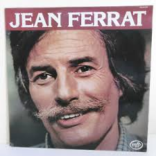
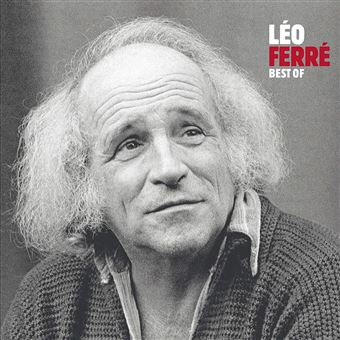
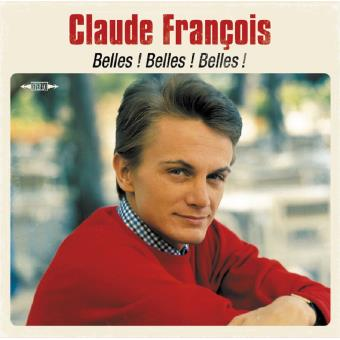
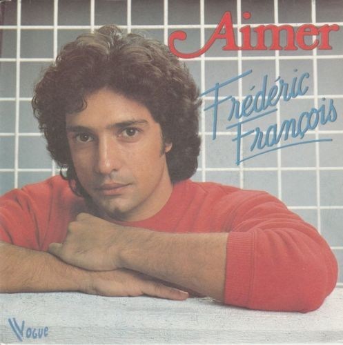
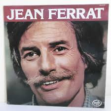
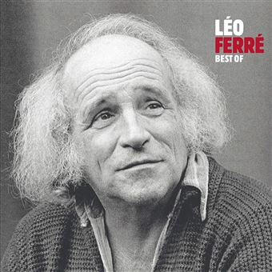
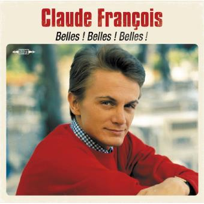
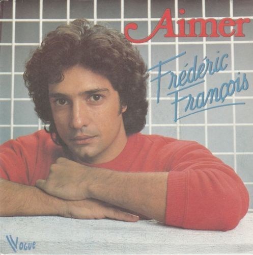
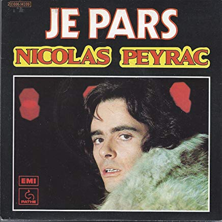
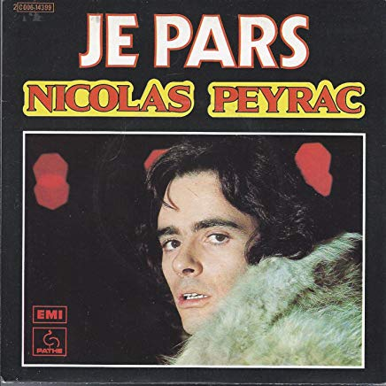

Univers
Je suis un chanteur yéyé !
Cette époque m'évoque des souvenirs merveilleux et la liberté!
La musique était présente partout. On avait les tourne-disques portatifs spéciaux
pour les 45 tours, des magnétophones, des radios grandes ondes, enfin tout ce qui pouvait
faire de la musique!
On essayait de faire comme nos idoles :
vêtements , chaussures...
Pour ma part, j'avais la même petite moto que Johnny dans le film "D’où viens-tu Johnny",
maintenant je roule en Harley Davidson comme notre rockeur.
Les années Yéyé, c'était aussi les cheveux longs et l'explosion de couleurs dans nos fringues,
beaucoup d'insouciance!
A la sortie du bal, si un fou proposait de boire le café à Lyon...
à votre avis?!!
Les chansons que j'interprète tournent autour de l'univers musical de ces années et
émissions "Salut les copains" & "Âge tendre".
Vous retrouverez entre autres Johnny Hallyday,
Michel Sardou, Gilbert Becaud, Jean Ferrat, Charles Aznavour... au total plus de 70 chanteurs!
Voici un aperçu en image de mon répertoire.
 







 
